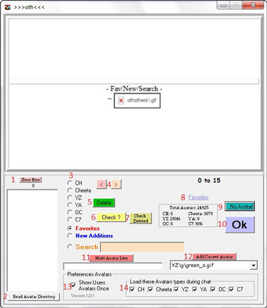
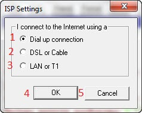
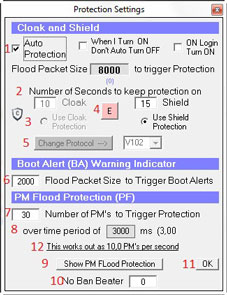
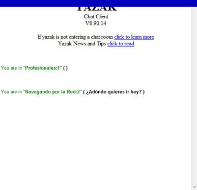
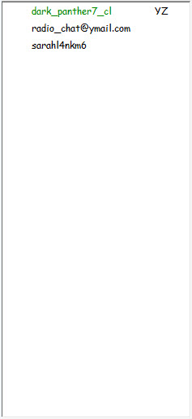
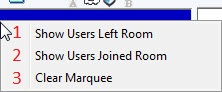

Sección 2

a Preferencia de avatares
1 Mostrar nuevo
2 Leer directorio de avatares
3 Avatares de los distintos clientes
4 Atrás y siguiente página
5 Borrar
6 Revisar
7 Revisar borrados
8 Favoritos
9 Sin avatar
10 Aceptar
11 Multiavatar o secuencia de letras
12 Agregar avatar
13 Mostrar avatares de usuarios sólo una vez
14 Cargar avatares de éstos clientes durante el chat
1 Mostrar nuevo
2 Leer directorio de avatares
3 Avatares de los distintos clientes
4 Atrás y siguiente página
5 Borrar
6 Revisar
7 Revisar borrados
8 Favoritos
9 Sin avatar
10 Aceptar
11 Multiavatar o secuencia de letras
12 Agregar avatar
13 Mostrar avatares de usuarios sólo una vez
14 Cargar avatares de éstos clientes durante el chat

b Configuración de cámara web
1 Conexión por teléfono
2 Conexión por DSL o Cable
3 Conexión por Lan o T1
4 Aprobar
5 Cancelar
1 Conexión por teléfono
2 Conexión por DSL o Cable
3 Conexión por Lan o T1
4 Aprobar
5 Cancelar
c Alerta de boots, titilan cuando te botean
d Configuración de nick fantasma
1 Entrar en modo fantasma
2 Datos generales
3 Conectar
4 Lista de nicks para usar
5 Ingresar
6 Ocultar
1 Entrar en modo fantasma
2 Datos generales
3 Conectar
4 Lista de nicks para usar
5 Ingresar
6 Ocultar
f Exploit de texto/encendido
g Cantidad de posts en sala y perdidos
h Tiempo transcurrido en sala
g Cantidad de posts en sala y perdidos
h Tiempo transcurrido en sala
Sección 3
Sección 4
Cuadro donde se van agregando automáticamente los usuarios que entran en la sala de chat
Espacio donde se puede ver como interactúa cada nick que participa de la sala





e Configuración de escudo
1 Protección automática
2 Número de segundos de protección
3 Usar protección de capa (no se usa más)
4 Protección emergente
5 Cambiar protocolo
6 Tamaño de paquetes rápidos para anunciar alerta de booter
7 Número de mensajes privados
8 Sobre un período de..
9 Mostrar protección en ataques privados
10 No baneo (prohibición a nuestro texto)
11 Aceptar
12 Esto trabaja hasta con 10 privados por segundo
1 Protección automática
2 Número de segundos de protección
3 Usar protección de capa (no se usa más)
4 Protección emergente
5 Cambiar protocolo
6 Tamaño de paquetes rápidos para anunciar alerta de booter
7 Número de mensajes privados
8 Sobre un período de..
9 Mostrar protección en ataques privados
10 No baneo (prohibición a nuestro texto)
11 Aceptar
12 Esto trabaja hasta con 10 privados por segundo



a Marquesina
1 Mostrar usuarios que han salido
2 Mostrar usuarios que han entrado
3 Borrar listas
1 Mostrar usuarios que han salido
2 Mostrar usuarios que han entrado
3 Borrar listas
a